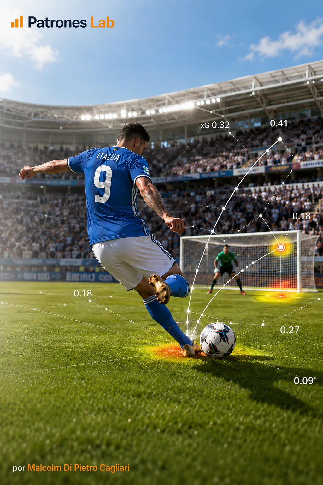
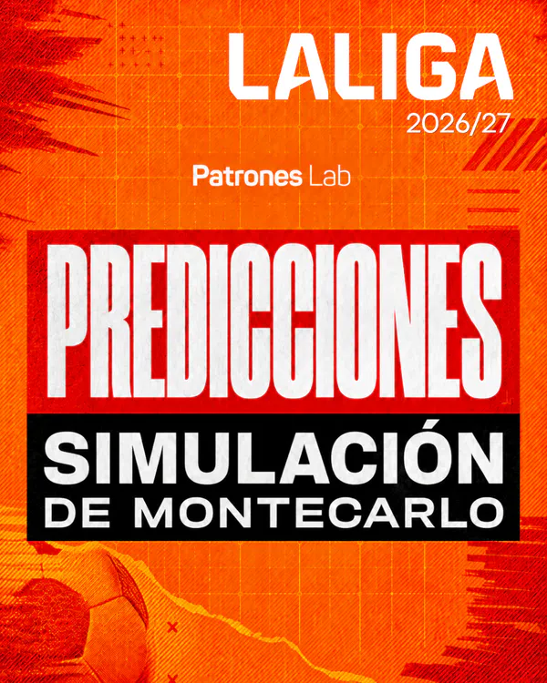
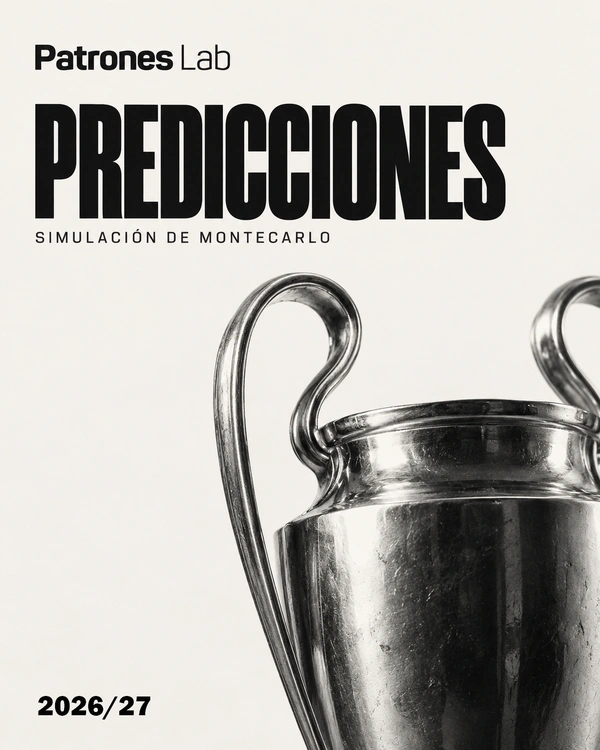
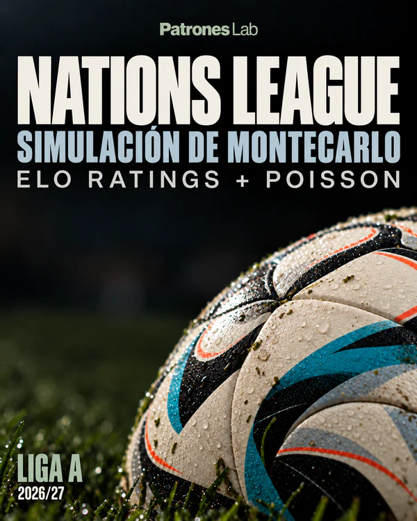

Buts Attendus dans le Football
Modèle de régression logistique qui estime la probabilité qu’un tir devienne un but à partir de données publiques StatsBomb, avec validation par match et application à la Coupe du monde Qatar 2022.

Simulation d’un million de scénarios de la Coupe du monde 2026 à partir des scores Elo pour estimer les probabilités d’atteindre les demi-finales, de jouer la finale et de devenir champion.

Simulation d’un million de scénarios de LaLiga 2026/27 à partir de scores Elo afin d’estimer les probabilités des principaux résultats du championnat.

Modèle de buts fondé sur la loi de Poisson pour calculer les forces offensives et défensives de chaque équipe, combiné à la simulation de Monte-Carlo pour estimer les probabilités du championnat.

Simulation d’un million de scénarios de la Nations League 2026/27 avec des ratings Elo et un modèle de buts fondé sur Poisson pour estimer les probabilités de remporter le groupe, de progresser dans les tours à élimination directe et de gagner le titre.